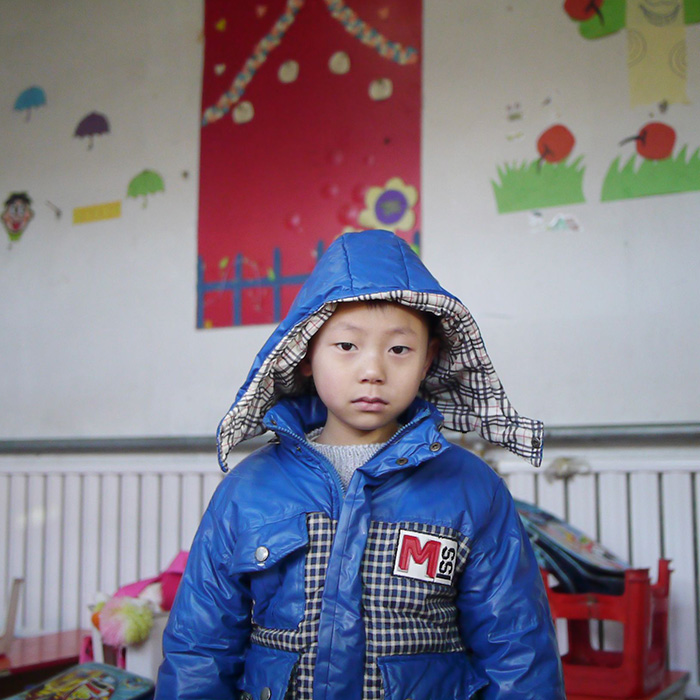
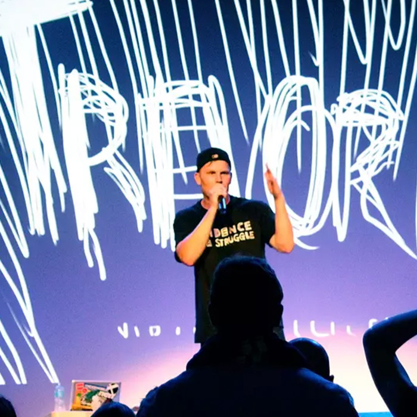
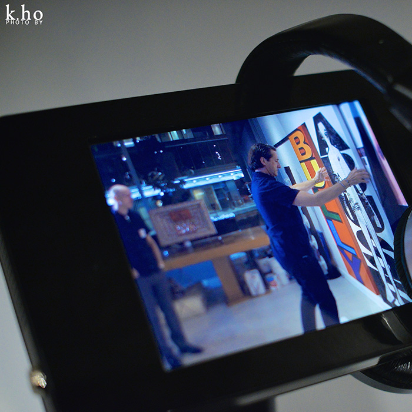
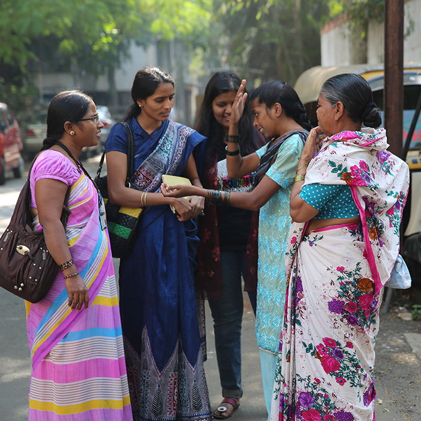
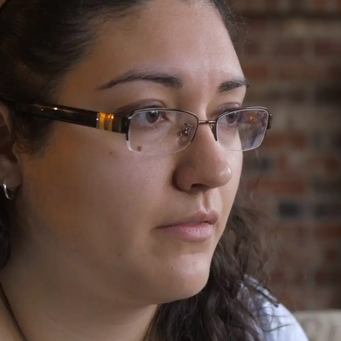
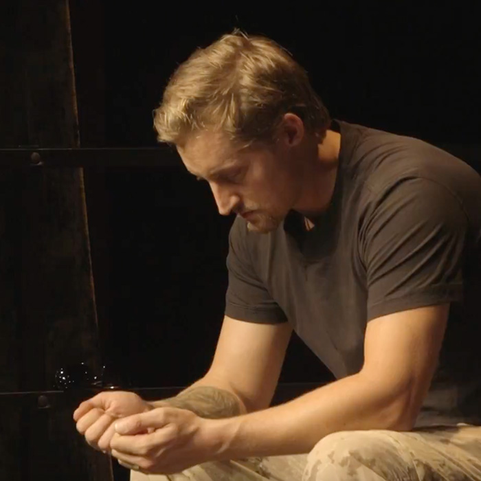

Beijing’s Sick Kids
The Toronto Star/International Reporting Program

Evidence of a Struggle
CTV News

Still Here
Vancouver Queer Film Fest/Reel Pride Film Fest

Out of the Shadows: Overcoming Mental Illness
Al Jazeera

Behind the Mask
